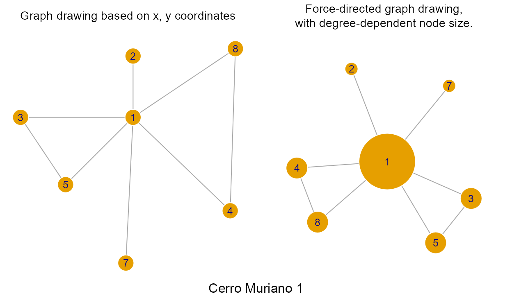
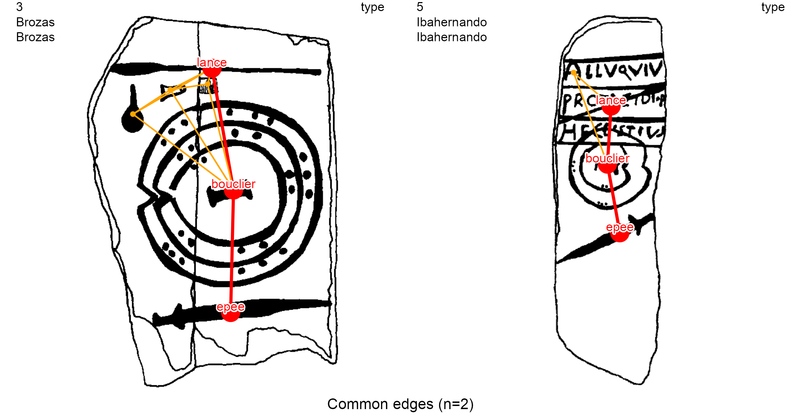

The iconr package
Graph Analysis of Prehistoric Iconography with R
Thomas Huet, Jose M Pozo, Craig Alexander
Source:vignettes/index.Rmd
index.Rmd![logo]()
The R package iconr is grounded in graph theory and spatial analysis. It offers concepts and functions for modeling Prehistoric iconographic compositions and for their preparation for further analysis (clustering, Harris diagram, etc.) in order to contribute to cross-cultural iconography comparison studies through a greater normalization of quantitative analysis (Alexander 2008; Huet and Alexander 2015; Huet 2018).
/Documents/iconr/vignettes/img/solana_detail_256colours.png)
Detail of a Late Bronze Age stelae (Solana de Cabañas, Cáceres, Spain). Credits: Museo Arqueológico Nacional, Madrid
The flexibility of graph theory and tools available for the GIS database make the iconr package useful in managing, plotting and comparing (potentially large) sets of iconographic content: Atlantic rock-art, Scandinavian rock art, Late Bronze Age stelae, Mycenean figurative pottery, etc.
Decoration graphs
The main principle of the iconr package is to consider any iconographic composition (here, ‘decoration’) as a geometric graph of graphical units (GUs). This geometric graph is also known as a planar graph or spatialized graph. The GUs are decorated surfaces (POLYGONS) modeled as nodes (POINTS). When these GUs are main nodes, and not attribute nodes, they share edges (LINES) with one another when their Voronoi cells share a border (birel: touches).
/Documents/iconr/vignettes/img/solana_voronoi_256colours.png)
GIS view. The Solana de Cabanas stelae: from its photograph to the modeling of its graphical content
Graph theory offers a conceptual framework and indices (global at the entire graph scale, local at the vertex scale) to deal with notions of networks, relationships and neighbourhoods. The geometric graph is commonly built within a GIS interface. Indeed, use of GIS allows one to create a spatial database of the decoration’s iconographic contents and facilitates data recording and visualization. For example, snapping options can connect GUs (nodes) with lines (edges) and we can exploit tools such as feature symbology, layer transparency, etc.
The latest development version of the iconr package and its vignette can be downloaded from GitHub
devtools::install_github("zoometh/iconr", build_vignettes=TRUE)The R package iconr is composed of functions and a example dataset. The main R packages used by the iconr package are:
- magick-image: for drawing/image management
- igraph: for graph management
- rgdal: for shapefile management
Load the package iconr
Dataset
The input dataset is expected to include decoration images and corresponding node and edge data in a single data folder. This folder should include the following files:
- Table of decorations: A tabular file storing the set of decoration identifiers and corresponding image filenames.
- Images: An image file for each decoration.
- Node data: A single file storing the data of each node for all decorations.
- Edge data: A single file storing the data of each edge for all decorations.
The iconr package includes an example dataset with the input files in several alternative formats. The path for the example dataset is the package extdata folder. This folder is also – by default – the output folder. In order to differentiate input data from output data, the output data filenames always start with a digit or an underscore (ie, a punctuation). So, the input data are :
dataDir <- system.file("extdata", package = "iconr")
input.files <- list.files(dataDir)
cat(input.files, sep="\n")
> _compar_eds_1_3.pdf
> _compar_eds_1_4.jpg
> _compar_eds_1_4.pdf
> _compar_eds_2_3.png
> _compar_eds_2_4.png
> _compar_eds_3_4.pdf
> _compar_eds_3_4.png
> _compar_eds_3_5.png
> _compar_nds_1_4.png
> _compar_nds_2_3.png
> _compar_nds_2_4.png
> _compar_nds_3_4.png
> _compar_nds_3_5.png
> 3_Brozas_Brozas_id.jpg
> Brozas.Brozas.jpg
> Cerro_Muriano.Cerro_Muriano_1.jpg
> edges.csv
> edges.dbf
> edges.shp
> edges.shx
> edges.tsv
> Ibahernando.Ibahernando.jpg
> imgs.csv
> imgs.tsv
> nodes.csv
> nodes.dbf
> nodes.shp
> nodes.shx
> nodes.tsv
> Torrejon_Rubio.Torrejon_Rubio_1.jpg
> Zarza_de_Montanchez.Zarza_De_Montanchez.jpgThe table of decorations is given in two formats: comma- or semicolon-separated values (imgs.csv) and tab-separated value (imgs.tsv).
imgs_path <- paste0(dataDir, "/imgs.csv")
imgs <- read.table(imgs_path, sep=";", stringsAsFactors = FALSE)Each decoration is identified by its name (column decor) and the name of the site (column site) to which it belongs. In the example dataset, this is transparent in the name of each decoration image, included in jpg format. Any other image format supported by the R package magick (jpg, png, tiff, pdf, etc.) is suitable.
As we have stated, a GIS interface is often the most practical way to record graph nodes and graph edges with POINTS and LINES geometries, respectively. This is typically saved in shapefile (shp) format, which is composed of at least 3 files with extensions .shp (geometries), .shx (indices), and dbf (attribute data). The example dataset includes them for nodes and edges separately, with obvious names:
nodes_path <- paste0(dataDir, "/nodes.shp")
nodes.shp <- rgdal::readOGR(dsn = nodes_path, verbose = FALSE)
nodes <- as.data.frame(nodes.shp)
edges_path <- paste0(dataDir, "/edges.shp")
edges.shp <- rgdal::readOGR(dsn = edges_path, verbose = FALSE)
edges <- as.data.frame(edges.shp)Nodes and edges can also be recorded in tabular format: .csv or .tsv.
nodes_path <- paste0(dataDir, "/nodes.tsv")
nodes <- read.table(nodes_path, sep="\t", stringsAsFactors = FALSE)
edges_path <- paste0(dataDir, "/edges.tsv")
edges <- read.table(edges_path, sep="\t", stringsAsFactors = FALSE)The list of graph decorations is created with the list_dec() function. These graphs are igraph objects
lgrph <- list_dec(imgs, nodes, edges)
g <- lgrph[[1]]
as.character(class(g))
> [1] "igraph"By default, the plot.igraph() function (ie, igraph::plot()) spatialization (layout) is based on x and y columns, when these exist. This is appropriate in our case since we are working with geometric graphs. If this spatialization (node coordinates) is ignored, then very different layouts are possible for the same graph (graph drawing):
oldpar <- par(no.readonly = TRUE)
on.exit(par(oldpar))
par(mar=c(1, 0, 2, 0), mfrow=c(1, 2), cex.main = 0.9, font.main = 1)
coords <- layout.fruchterman.reingold(lgrph[[1]])
plot(g,
vertex.size = 15,
vertex.frame.color="white",
vertex.label.family = "sans",
vertex.label.cex = .8,
main = "Graph drawing based on x, y coordinates"
)
plot(g,
layout = layout.fruchterman.reingold(g),
vertex.size = 5 + degree(g)*10,
vertex.frame.color="white",
vertex.label.family = "sans",
vertex.label.cex = .8,
main = "Force-directed graph drawing,\nwith degree-dependent node size."
)
mtext(g$decor, cex = 1, side = 1, line = -1, outer = TRUE)
Table of decorations
In any compatible file format readable by R, such as comma-separated values (csv) or tabular-separated values (tsv). Decorations identifiers and decorations image filenames are stored in a dataframe, by default the imgs dataframe:
imgs_path <- paste0(dataDir, "/imgs.tsv")
imgs <- read.table(imgs_path, sep="\t", stringsAsFactors = FALSE)
knitr::kable(imgs, "html") %>%
kableExtra::kable_styling(full_width = FALSE, position = "center", font_size=12)| idf | site | decor | img |
|---|---|---|---|
| 1 | Cerro Muriano | Cerro Muriano 1 | Cerro_Muriano.Cerro_Muriano_1.jpg |
| 2 | Torrejon Rubio | Torrejon Rubio 1 | Torrejon_Rubio.Torrejon_Rubio_1.jpg |
| 3 | Brozas | Brozas | Brozas.Brozas.jpg |
| 4 | Zarza de Montanchez | Zarza De Montanchez | Zarza_de_Montanchez.Zarza_De_Montanchez.jpg |
| 5 | Ibahernando | Ibahernando | Ibahernando.Ibahernando.jpg |
The decoration’s unique identifiers are the concatenation of the site name and the decoration name. For example, the name of the Cerrano Muriano 1 decoration is: Cerro_Muriano.Cerro_Muriano_1.jpg.
Images
Image or drawing (eg, bitmap images, rasters, grids) formats accepted are the common ones (jpg, png, jpeg, tiff, pdf, etc.). The images in the current example dataset come from a PhD thesis, published by M. Diaz-Guardamino (Dı́az-Guardamino Uribe 2010).
For a given decoration, its image is the reference space of the graph: nodes and edges inherit their coordinates from this image. However, different image or graphic systems use different coordinate conventions. The following table illustrates some of the most relevant ones:
| Device/Package | Unit of measure | Origin | x-axis orientation | y-axis orientation |
|---|---|---|---|---|
| R graphics | number of pixels | bottom-left corner | rightward | upward |
| R raster | number of pixels | top-left corner | downward | rightward |
| R magick | number of pixels | top-left corner | rightward | downward |
| GIS interface | number of pixels | top-left corner | rightward | upward |
The package iconr follows the coordinate conventions of the GIS interface. This is in agreement with our advice above to use the GIS as the preferred interface to extract nodes and edges from the decoration image. Observe that the y-axis is oriented upwards from the top-left corner, which implies that y-coordinates are always negative in the image (ie, downwards). The following image illustrates a decoration with the iconr (GIS) coordinates for the four corners. Note the contrast with the coordinates in the code generating it with the standard graphics package.
library(magick)
library(graphics)
dataDir <- system.file("extdata", package = "iconr")
imgs_path <- paste0(dataDir, "/imgs.csv")
imgs <- read.table(imgs_path, sep=";", stringsAsFactors = FALSE)
cm1 <- image_read(paste0(dataDir, "/", imgs$img[1]))
W <- image_info(cm1)$width
H <- image_info(cm1)$height
oldpar <- par(no.readonly = TRUE)
on.exit(par(oldpar))
par(mar = c(0, 0, 0, 0))
plot(cm1)
box(lwd = 2)
text(0, H, paste0(0, ",", 0), cex = 2, adj = c(0, 1.1))
text(W, H, paste0(W, ",", 0), cex = 2, adj = c(1, 1.1))
text(0, 0, paste0(0, ",", -H), cex = 2, adj = c(0, -0.2))
text(W, 0, paste0(W, ",", -H), cex = 2, adj = c(1, -0.2))
iconr (GIS) coordinate convention: decoration Cerro_Muriano.Cerro_Muriano_1.jpg with the coordinates of its corners.
Node data
Nodes can be stored in any of the following formats: comma-separated values (.csv), tab-separated values (.tsv), or shapefile (.shp). Any of these formats is consistenly read by the function iconr::read_nds() generating a data.frame with the node data. For the generic csv and tsv formats, at least the following five columns are required to be included:
- site: decoration site
- decor: decoration name
- id: id uniquelly identifying each node
- x: x-coordinate of nodes
- y: y-coordinate of nodes
Additional columns can be included providing relevant characteristics of each node. The example dataset includes the column:
- type: type of GU (ie, what it represents)
These node characteristics can then be used for image annotations, decoration comparisons and decoration analysis. Nodes attributes coming from the GIS interface:
nds.df <- read_nds(site = "Cerro Muriano", decor = "Cerro Muriano 1", dir = dataDir)
knitr::kable(nds.df, "html") %>%
kableExtra::kable_styling(full_width = FALSE, position = "center", font_size=12)| site | decor | id | type | x | y |
|---|---|---|---|---|---|
| Cerro Muriano | Cerro Muriano 1 | 1 | personnage | 349.8148 | -298.3244 |
| Cerro Muriano | Cerro Muriano 1 | 2 | casque | 349.8148 | -243.9851 |
| Cerro Muriano | Cerro Muriano 1 | 3 | lance | 238.4637 | -298.3244 |
| Cerro Muriano | Cerro Muriano 1 | 4 | bouclier | 446.0222 | -381.1697 |
| Cerro Muriano | Cerro Muriano 1 | 5 | peigne | 283.0041 | -358.0086 |
| Cerro Muriano | Cerro Muriano 1 | 7 | sexe_masculin | 342.6884 | -427.4917 |
| Cerro Muriano | Cerro Muriano 1 | 8 | lingot_pdb | 451.1489 | -237.4782 |
In principle, the nodes are defined to be located at the exact centroids of each GU. However, for practical reasons, they can also be manually located close to these centroids.
Nodes types
Nodes can be main nodes or attribute nodes depending on the type of edges they share with other nodes (see edge types). For example, considering the Cerro Muriano 1 stelae:
main nodes: the anthropomorphic figure, the spear, the shield, the comb and the ingot can be considered as main nodes because they are separated and they show different graphical contents.
attribute nodes: the helmet and the male sex of the antropomorphic figure can be considered as attribute nodes of the anthropomorphic figure because they are characteristic features of this latter.
Edge data
Edges can be stored in the same three formats as nodes: csv, tsv, or shp. At least the following five columns or variables are required to be included:
- site: decoration site
- decor: decoration name
- a: id of the first node of each edge
- b: id of the second node of each edge
- type: edge types
These columns can be seen in the example dataset:
edges <- read.table(edges_path, sep = "\t", stringsAsFactors = FALSE)
knitr::kable(head(edges), "html", align = "llccc") %>%
kableExtra::kable_styling(full_width = FALSE, position = "center",
font_size=12) %>%
gsub("\\+", "$+$", .)| site | decor | a | b | type |
|---|---|---|---|---|
| Cerro Muriano | Cerro Muriano 1 | 1 | 4 | = |
| Cerro Muriano | Cerro Muriano 1 | 1 | 5 | = |
| Cerro Muriano | Cerro Muriano 1 | 3 | 5 | = |
| Cerro Muriano | Cerro Muriano 1 | 1 | 2 | \(+\) |
| Cerro Muriano | Cerro Muriano 1 | 1 | 7 | \(+\) |
| Cerro Muriano | Cerro Muriano 1 | 3 | 1 | = |
Analogously to nodes, any of these formats is consistently read by the function iconr::read_eds() generating a data.frame with the edges data. Additionally, this function includes columns with the coordinates of the edge nodes:
- xa: x-coordinate of the first node of each edge
- ya: y-coordinate of the first node of each edge
- xb: x-coordinate of the second node of each edge
- yb: y-coordinate of the second node of each edge
Those coordinates are imported from the x and y coordinates in the corresponding node file, identified by the node id as stated in the edge fields a and b, respectively.
eds.df <- read_eds(site = "Cerro Muriano", decor = "Cerro Muriano 1", dir = dataDir)
knitr::kable(head(eds.df), "html", align = "llcccrrrr") %>%
kableExtra::kable_styling(full_width = FALSE, position = "center", font_size=12) %>%
gsub("\\+", "$+$", .)| site | decor | a | b | type | xa | ya | xb | yb |
|---|---|---|---|---|---|---|---|---|
| Cerro Muriano | Cerro Muriano 1 | 1 | 4 | = | 349.8148 | -298.3244 | 446.0222 | -381.1697 |
| Cerro Muriano | Cerro Muriano 1 | 1 | 5 | = | 349.8148 | -298.3244 | 283.0041 | -358.0086 |
| Cerro Muriano | Cerro Muriano 1 | 3 | 5 | = | 238.4637 | -298.3244 | 283.0041 | -358.0086 |
| Cerro Muriano | Cerro Muriano 1 | 1 | 2 | \(+\) | 349.8148 | -298.3244 | 349.8148 | -243.9851 |
| Cerro Muriano | Cerro Muriano 1 | 1 | 7 | \(+\) | 349.8148 | -298.3244 | 342.6884 | -427.4917 |
| Cerro Muriano | Cerro Muriano 1 | 3 | 1 | = | 238.4637 | -298.3244 | 349.8148 | -298.3244 |
column names
-
type: edges types=: normal edges between contiguous and contemporaneous main nodes (undirected edge)+: attribute edges, between contemporaneous nodes where the attribute nodebis an attribute of main nodea(directed edge)>: diachronic edges, between non-contemporaneous nodes where the nodeaoverlaps nodeb, or nodeais more ancient than nodeb(directed edge)
xa, ya: coordinates of the starting node, or main node, or overlapping node, or more recent node (a)xb, yb: coordinates of the ending node, or attribute node, or overlapped node, , or more ancient node (b)
Edge types
Graph theory says that edges can be undirected or directed. In the iconr package, by default:
all contemporaneous nodes have normal edges or attribute edges edges displayed in orange
all non-contemporaneous nodes have diachronic edges displayed in blue edges (see contemporaneous nodes)
The named_elements() function allows one to display the textual notation of the different types of edges (-=-, -+- or ->-)
named_elements(lgrph[[1]], focus = "edges", nd.var="type")[1]
> [1] "bouclier-=-personnage"When there are nodes with the same nd.var, this function adds the suffix # to the nd.var in order to disambiguate the node list. This is the case, for example, for the chariot_char-+-cheval (x2) and chariot_char-+-roue (x2) edges of the Zarza de Montanchez stelae (decoration 4)
named_elements(lgrph[[4]], focus = "edges", nd.var="type")
> [1] "casque-=-epee" "casque-=-miroir"
> [3] "epee-=-lance" "epee-=-miroir"
> [5] "bouclier-=-lance" "lance-=-personnage"
> [7] "bouclier-=-personnage" "chariot_char-+-cheval"
> [9] "chariot_char-+-cheval#" "chariot_char-+-roue"
> [11] "chariot_char-+-roue#" "bouclier-=-chariot_char"
> [13] "chariot_char-=-personnage" "casque-+-rivet"Employed with the basic R functions for loop (lapply()), count (table()) and order (order()), and removing the the suffix #, this function can be used to count the different types of edge. Here, we enumerate the most represented types of the example dataset:
all.edges <- unlist(lapply(lgrph, named_elements,
focus = "edges", nd.var="type", disamb.marker=""))
edges.count <- as.data.frame(table(all.edges))
edges.order <- order(edges.count$Freq, decreasing = TRUE)
edges.count <- edges.count[edges.order, ]
knitr::kable(head(edges.count), row.names = FALSE) %>%
kableExtra::kable_styling(full_width = FALSE, position = "center", font_size=12)| all.edges | Freq |
|---|---|
| chariot_char-+-cheval | 4 |
| chariot_char-+-roue | 4 |
| bouclier-=-epee | 3 |
| bouclier-=-lance | 3 |
| bouclier-=-chariot_char | 2 |
| bouclier-=-fibule | 2 |
Normal edges
Different main nodes considered to be contemporaneous and close to one another, may share an edge with the value = for their type. By convention, these edges are called normal and displayed as a plain line. Its textual notation is -=-. The normal edges are undirected: 1-=-2 is equal to 2-=-1, where node 1 and node 2 are two different main nodes.
Attribute edges
When a node is an attribute of another, edges are identified with a + and displayed with a dashed line. For example, at the bottom of the Zarza de Montanchez stelae (decoration 4), the main node 7 (chariot) is connected with four (4) attribute nodes:
two horses (
cheval): 8 and 9two wheels (
roue): 10 and 11
site <- "Zarza de Montanchez"
decor <- "Zarza De Montanchez"
nds.df <- read_nds(site, decor, dataDir)
eds.df <- read_eds(site, decor, dataDir)
plot_dec_grph(nds.df, eds.df, imgs,
site, decor, dataDir,
ed.lwd = 1, ed.color = c("darkorange"),
lbl.size = 0.7)Zarza De Montanchez stelae (decoration 4) showing normal and attribute edges
The textual notation of an attribute edge is -+-:
sort(named_elements(lgrph[[4]], focus = "edges", nd.var = "type"))
> [1] "bouclier-=-chariot_char" "bouclier-=-lance"
> [3] "bouclier-=-personnage" "casque-+-rivet"
> [5] "casque-=-epee" "casque-=-miroir"
> [7] "chariot_char-+-cheval" "chariot_char-+-cheval#"
> [9] "chariot_char-+-roue" "chariot_char-+-roue#"
> [11] "chariot_char-=-personnage" "epee-=-lance"
> [13] "epee-=-miroir" "lance-=-personnage"The attribute edges are directed: 1-+-2 is not equal to 2-+-1, 1-+-2 means that node 1 is the main node and node 2 is one of its attribute nodes.
Diachronic edges
When a node overlaps another or is more recent than another, edges are identified with a > and displayed with a blue plain line. For example, the Ibahernando stelae has a latin inscription (ecriture) overlapping a spear (lance) and a shield (bouclier).
site <- "Ibahernando"
decor <- "Ibahernando"
nds.df <- read_nds(site, decor, dataDir)
eds.df <- read_eds(site, decor, dataDir)
oldpar <- par(no.readonly = TRUE)
on.exit(par(oldpar))
par(mfrow = c(1, 2))
plot_dec_grph(nds.df, eds.df, imgs,
site, decor, dataDir,
lbl.size = 0.7)
plot_dec_grph(nds.df, eds.df, imgs,
site, decor, dataDir,
nd.var = 'type',
lbl.size = 0.6)Ibahernando stelae (decoration 5) showing diachronic and normal edges
The textual notation of an diachronic edge is ->-:
named_elements(lgrph[[5]], focus = "edges", nd.var = "type")
> [1] "ecriture->-lance" "ecriture->-bouclier" "bouclier-=-lance"
> [4] "bouclier-=-epee"The diachronic edges are directed: 1->-2 is not equal to 2->-1. The 1->-2 edge means that node 1 overlaps node 2, or node 1 is more recent than node 2. These overlays, or diachronic iconographic layers, can be managed with the contemp_nds() function (see the section Contemporaneous contents)
Functions
Decoration graphs are constructed from nodes and edges. Graphs are 1-component: each decoration graph covers all the GUs of the decoration. The functions of the iconr package provide basic tools to manage these node data (.csv, .tsv or .shp) and edge data (.csv, .tsv or .shp) to create graphs, to plot and to compare them, to select contemporaneous GU compositions
cat(ls("package:iconr"), sep="\n")
> contemp_nds
> eds_compar
> labels_shadow
> list_compar
> list_dec
> named_elements
> nds_compar
> plot_compar
> plot_dec_grph
> read_eds
> read_nds
> same_elementsRead
The functions read_nds() and read_eds() allow, respectively, to read a dataframe or a shapefile of nodes, and a dataframe or a shapefile of edges. For example, the nodes and edges of Cerro Muriano 1 can be read
Plot
The graphical functions plot_dec_grph() and plot_compar() allow, respectively, to plot one decoration or pairwise(s) of decorations. These function offer different choices for the color and size of the nodes, edges or labels. For example, for the Cerro Muriano 1 decoration, the field id (identifier of the node), used by default for the labels, can be changed to the type field
plot_dec_grph(nds.df, eds.df, imgs,
site, decor, dataDir,
nd.var = 'type',
lbl.size = 0.55)Cerro Muriano 1 stelae (decoration 1) with the type of each GU
A new field, long_cm, is added to the Cerro Muriano 1 nodes and the graph is replotted using this field instead of the type field, with brown colors and larger labels.
nds.df$long_cm <- paste0(c(47, 9, 47, 18, 7, 3, 13), "cm")
plot_dec_grph(nds.df, eds.df, imgs,
site, decor, dataDir,
nd.var = 'long_cm',
nd.color = "brown",
lbl.color = "brown", lbl.size = 0.7,
ed.color = "brown")Cerro Muriano 1 stelae (decoration 1) with the maximum length (in cm) of each GU
Compare
Elements of the graphs (nodes and edges) can be compared across all graphs or between a pair of graphs with the same_elements() and plot_compar() functions
same_elements()function permits one to count common elements between n graphsplot_compar()function shows a graphical output for these common elements
By default, in a pairwise comparison of decorations, common nodes and edges are displayed in red, but their colors – and other graphical parameters – can be modified. When not all GUs are contemporaneous with one another, the non-contemporaneous ones can be removed with the contemp_nds() function.
Node comparisons
A classic study in archaeological research is to count the common nodes between pairs of decorations. This can be done with the same_elements() function with a node focus (focus = "nodes"), and considering for example their type (by default).
imgs_path <- paste0(dataDir, "/imgs.tsv")
nodes_path <- paste0(dataDir, "/nodes.tsv")
edges_path <- paste0(dataDir, "/edges.tsv")
imgs <- read.table(imgs_path, sep="\t", stringsAsFactors = FALSE)
nodes <- read.table(nodes_path, sep="\t", stringsAsFactors = FALSE)
edges <- read.table(edges_path, sep="\t", stringsAsFactors = FALSE)
lgrph <- list_dec(imgs, nodes, edges)
df.same_nodes <- same_elements(lgrph,
focus = "nodes",
nd.var = "type")
diag(df.same_nodes) <- cell_spec(diag(df.same_nodes),
font_size = 9)
knitr::kable(df.same_nodes, row.names = TRUE, escape = FALSE, table.attr = "style='width:30%;'",
caption = "Count of common nodes between decorations") %>%
column_spec(1, bold=TRUE) %>%
kableExtra::kable_styling(position = "center", font_size = 12)| 1 | 2 | 3 | 4 | 5 | |
|---|---|---|---|---|---|
| 1 | 7 | 2 | 3 | 4 | 2 |
| 2 | 2 | 12 | 5 | 9 | 3 |
| 3 | 3 | 5 | 6 | 4 | 3 |
| 4 | 4 | 9 | 4 | 12 | 3 |
| 5 | 2 | 3 | 3 | 3 | 4 |
The result of same_elements() is a symmetric matrix giving the number of common nodes for each pair of decorations, where the row and column names are the identifiers of the decorations. Observe that, accordingly, the diagonal elements show the total number of nodes of each decoration.
Regarding the node variable type, the decoration 4 has a total twelve (12) nodes (see the diagonal). Decoration 4 and decoration 2 have nine (9) common nodes. Decoration 4 and decoration 3 have four (4) common nodes. This matrix can be used for further clustering analysis
To compare graphically the decorations 2, 3 and 4 on the node variable type:
first:
typevariable is pasted to thelist_compar()functionthen: the plot is made with the
plot_compar()function
dec.to.compare <- c(2, 3, 4)
g.compar <- list_compar(lgrph, nd.var = "type")
plot_compar(listg = g.compar,
dec2comp = dec.to.compare,
focus = "nodes",
nd.size = c(0.5, 1.5),
dir = dataDir) 


The function creates an image for each pair of stelae contained in the dec.to.compare variable (2, 3, 4), with a focus on nodes (focus = "nodes"). Thus, if \(n\) decorations are compared, it results in \(n\choose 2\) \(\frac{n!}{(n-2)!2!}\) pairwise comparison images. For instance, if all 5 decorations in the example dataset are compared, there will be 10 pairwise comparisons.
Edge comparisons
A less-common study in archaeological research is to count the common edges between pairs of decorations. The same_elements() function with an edge focus (focus = "edges") and considering the type of the nodes
df.same_edges <- same_elements(lgrph, nd.var = "type", focus = "edges")
diag(df.same_edges) <- cell_spec(diag(df.same_edges),
font_size = 9)
knitr::kable(df.same_edges, row.names = TRUE, escape = F, table.attr = "style='width:30%;'",
caption = "Count of common edges between decorations") %>%
column_spec(1, bold=TRUE) %>%
kableExtra::kable_styling(position = "center", font_size = 12)| 1 | 2 | 3 | 4 | 5 | |
|---|---|---|---|---|---|
| 1 | 8 | 0 | 1 | 2 | 0 |
| 2 | 0 | 15 | 3 | 7 | 1 |
| 3 | 1 | 3 | 10 | 1 | 2 |
| 4 | 2 | 7 | 1 | 14 | 1 |
| 5 | 0 | 1 | 2 | 1 | 4 |
In this dataframe:
cells show the total number of common edges by decoration
the diagonal of the dataframe shows is the total number of edges of a given decoration
Here, the decoration 2 has fifteen (15) edges and shares three (3) common edges with the decoration 3. To show them, and the decoration 4, we use the list_compar() function on the same variable (type) and the plot_compar() function with an edge focus (focus = "edges").
This matrix can be used for further clustering analysis
dec.to.compare <- c(2, 3, 4)
g.compar <- list_compar(lgrph, nd.var = "type")
plot_compar(listg = g.compar,
dec2comp = dec.to.compare,
focus = "edges",
nd.size = c(0.5, 1.7),
dir = dataDir)


Contemporaneous elements
At times some nodes are non-contemporaneous with one another, like on the Ibahernando stelae. This stelae was reused as a funerary stelae during Roman times with the addition of a Latin inscription “Alloquiu protaeidi.f hece. stitus”: Alluquio, son of Protacido, lies here (Basch 1966).
/Documents/iconr/vignettes/img/ibahernando_256colours.png)
GIS view. The Ibahernando stelae (decoration 5)
The writing (ecriture, node 1) has been carved over a spear (lance, node 2) and overlaps partially a V-notched shield (bouclier, node 3). The edges between node 1 and node 2, and the edge between node 1 and node 3, are diachronic edges
site <- "Ibahernando"
decor <- "Ibahernando"
nds.df <- read_nds(site, decor, dataDir)
eds.df <- read_eds(site, decor, dataDir)
plot_dec_grph(nds.df, eds.df, imgs,
site, decor, dataDir,
lbl.size = 0.7)Ibahernando stelae (decoration 5) with diachronic and normal edges, node 1 overlaps node 2 and node 3
In this case, the non-contemporaneous layers of decoration, both nodes and edges, should be removed before the comparison process. To that purpose, the original graph (1-component) can be split into different contemporaneous sub-graphs. By removing the diachronic edges (->-), the graph is split into connected components, each including the synchronic nodes of a different period. The studied graph component will be retrieved with the component membership of a selected node.
To study only the Late Bronze Age iconographic layer of the Ibahernando stelae, we can choose the Late Bronze Age node 4, the image of a sword (epee) dated to the middle and final stages of Late Bronze Age (ca 1250-950 BC). This node is believed to be contemporaneous with the spear (lance, node 2) and the shield (bouclier, node 3) so these three nodes are linked with normal edges (-=-). We pass the node 4 to the parameters of the contemp_nds() function:
site <- decor <- "Ibahernando"
selected.nd <- 4
nds.df <- read_nds(site, decor, dataDir)
eds.df <- read_eds(site, decor, dataDir)
l_dec_df <- contemp_nds(nds.df, eds.df, selected.nd)
oldpar <- par(no.readonly = TRUE)
on.exit(par(oldpar))
par(mfrow=c(1, 2))
plot_dec_grph(nds.df, eds.df, imgs,
site, decor, dataDir,
nd.var = "type",
lbl.color = "brown", lbl.size = 0.6)
plot_dec_grph(l_dec_df$nodes, l_dec_df$edges, imgs,
site, decor, dataDir,
nd.var = "type",
lbl.color = "brown", lbl.size = 0.6)Ibahernando stelae before and after the selection of node 4 (sword) graph component
On the other hand, epigraphists will only want to study the iconographic layer with the Latin writing. By selecting node 1 (ecriture), only the graph component of this node will be retained:
selected.nd <- 1
nds.df <- read_nds(site, decor, dir = dataDir)
eds.df <- read_eds(site, decor, dir = dataDir)
l_dec_df <- contemp_nds(nds.df, eds.df, selected.nd)
plot_dec_grph(l_dec_df$nodes, l_dec_df$edges, imgs,
site, decor, dir = dataDir,
nd.var = "type",
lbl.size = 0.6, lbl.color = "brown")Ibahernando stelae after the selection of node 1 (writing) graph component
Classify decorations
Besides graphical functions allowing one to highlight common elements (nodes and edges) between decorations, the package also allows one to prepare data for unsupervised classification, such as hierarchical clustering with the dist() and hclust():
oldpar <- par(no.readonly = TRUE)
on.exit(par(oldpar))
par(mfrow=c(1, 2))
df.same_edges <- same_elements(lgrph, "type", "edges")
df.same_nodes<- same_elements(lgrph, "type", "nodes")
dist.nodes <- dist(as.matrix(df.same_nodes), method = "euclidean")
dist.edges <- dist(as.matrix(df.same_edges), method = "euclidean")
hc.nds <- hclust(dist.nodes, method = "ward.D")
hc.eds <- hclust(dist.edges, method = "ward.D")
plot(hc.nds, main = "Common nodes", cex = .8)
plot(hc.eds, main = "Common edges", cex = .8)
Clustering of decorations on common nodes and clustering on common edges can be directly compared to one another:
suppressPackageStartupMessages(library(dendextend))
suppressPackageStartupMessages(library(dplyr))
oldpar <- par(no.readonly = TRUE)
on.exit(par(oldpar))
par(mfrow=c(1, 2))
dend.nds <- as.dendrogram(hc.nds)
dend.eds <- as.dendrogram(hc.eds)
dendlist(dend.nds, dend.eds) %>%
untangle(method = "step1side") %>%
tanglegram(columns_width = c(6, 1, 6),
main_left = "Common nodes",
main_right = "Common edges",
lab.cex = 1.3,
cex_main = 1.5,
highlight_branches_lwd = F) 
In both clusterings, the Brozas stelae (decoration 3) and the Ibahernando stelae (decoration 5) are the ones having the most important proximities (ie, the least Euclidian distance). The ‘Common edges’ clustering is more accurate than the ‘Common nodes’ clustering because the former takes into account the common combination, or common permutation, of two nodes with the type of their edge, while the latter only takes into account the presence of common nodes.
dec.to.compare <- c(3, 5)
g.compar <- list_compar(lgrph, nd.var = "type")
plot_compar(listg = g.compar,
dec2comp = dec.to.compare,
focus = "nodes",
nd.size = c(0.5, 1.7),
dir = dataDir)
plot_compar(listg = g.compar,
dec2comp = dec.to.compare,
focus = "edges",
nd.size = c(0.5, 1.7),
dir = dataDir)
Here, the comparisons have been made on the basis of different types (ie, graphical units, GUs) with the variable type (nd.var = "type"). However, if a new column is added to the node dataframe or shapefile, the study can also incorporate the technique by which the GU was created (nd.var = "technique") or any other categorical variable. For example, two GUs on the Brozas steale were made with incisions (g_inc): the fibula (fibula de codo tipo Huelva, ca 1050-950 BC) and the comb.
/Documents/iconr/vignettes/img/brozas_256colours.png)
GIS view. The Brozas stelae (decoration 1) with the different engraving techniques: g_piq (peckings) and g_inc (incisions)
Next developments
Graph theory allows one to construct tree structures for categorical variables (eg. the different types of GUs). These structures allow generalization processes (upward to the parent level) and specification processes (downward to the child level). For example, a sword and a spear belong both to the weapons group (sub-group offensive weapons), a shield belongs to the weapons group (sub-group defensive weapons), etc.:
oldpar <- par(no.readonly = TRUE)
on.exit(par(oldpar))
par(mar=c(0, 0, 0, 0))
g <- graph_from_literal(objects-+weapons,
objects-+personnal_item,
weapons-+offensive_weapons,
weapons-+defensive_weapons,
offensive_weapons-+spear,
offensive_weapons-+sword,
defensive_weapons-+shield,
defensive_weapons-+helmet,
personnal_item-+miror,
personnal_item-+comb)
layout <- layout.reingold.tilford(g)
plot(g,
layout = layout,
vertex.color = "white",
vertex.frame.color = "white",
vertex.size = 20,
vertex.label.cex = 0.7,
vertex.label.color = "black",
vertex.label.family = "sans",
edge.arrow.size = 0.5
)
Such a formalism can be used to weight the differences between nodes, to conduct analysis with different levels of precision or to overcome issues of idiosyncratic typologies.
Using the diachronic edge notation, tree structure can also be used to construct relative chronology diagrams, similar to a Harris matrix. For example, with the data.tree package and the Ibahernando stelae (decoration 5):
library(data.tree)
lgrph <- list_dec(imgs, nodes, edges)
edges.iba <- igraph::as_data_frame(lgrph[[5]], what="edges")
overlap.nodes <- unique(edges.iba[edges.iba$type == ">", "from"])
contemp.nodes <- unique(unlist(edges.iba[edges.iba$type == "=", c("from", "to")]))
df.stratig <- data.frame(over = rep(overlap.nodes, length(contemp.nodes)),
under = contemp.nodes)
df.stratig$pathString <- paste(lgrph[[5]]$decor,
df.stratig$over,
df.stratig$under,
sep = "/")
superpo <- as.Node(df.stratig)
print(superpo)
> levelName
> 1 Ibahernando
> 2 °--1
> 3 ¦--2
> 4 ¦--3
> 5 °--4